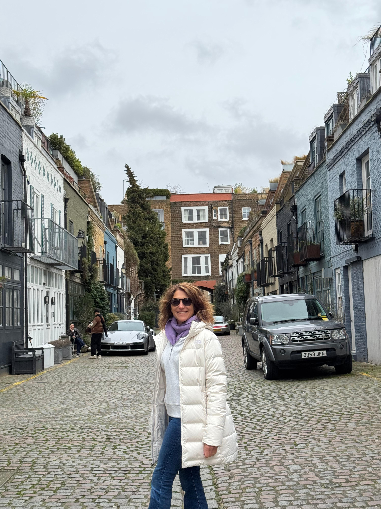

Summer Camp USA

Summer Camp UK

Programa Dukes
Winter Camp UK
Salida individual +50

"Una experiencia increíble. The Bridge me ayudó a vivir mi sueño de estudiar en Oxford. Los coordinadores siempre estuvieron pendientes de nosotros."
"El Summer Camp en USA fue espectacular. Aprendí inglés mientras conocía una cultura completamente nueva. ¡Recomiendo 100%!"
"A los 55 años pensé que era tarde para estudiar en el extranjero. The Bridge me demostró que nunca es tarde para aprender y viajar."
The Bridge Educational es una empresa independiente de servicios de idiomas